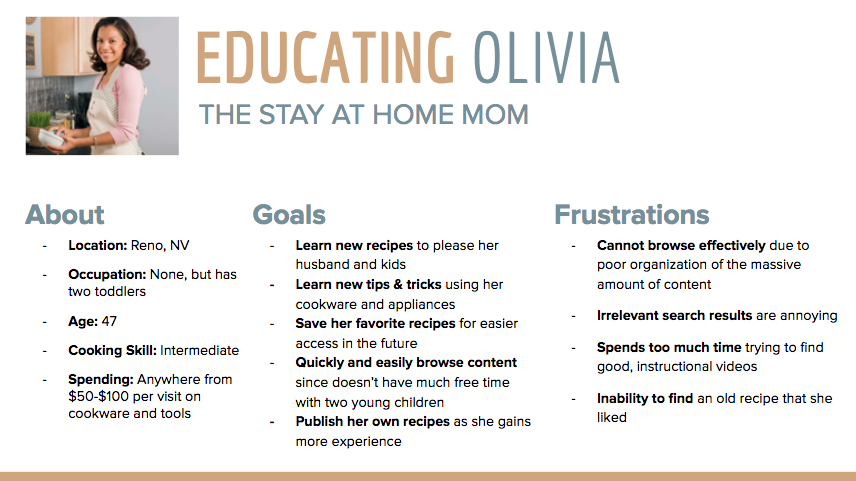
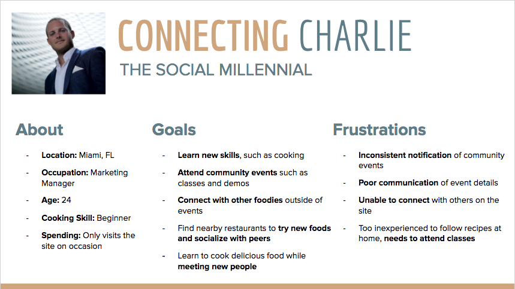
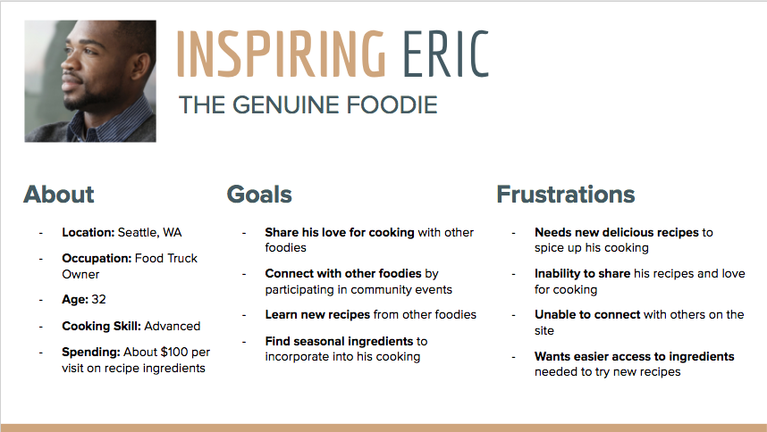
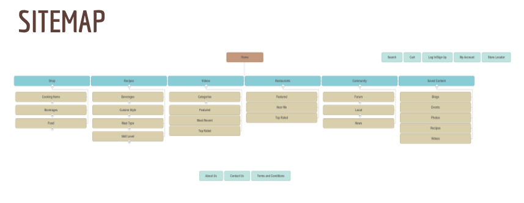
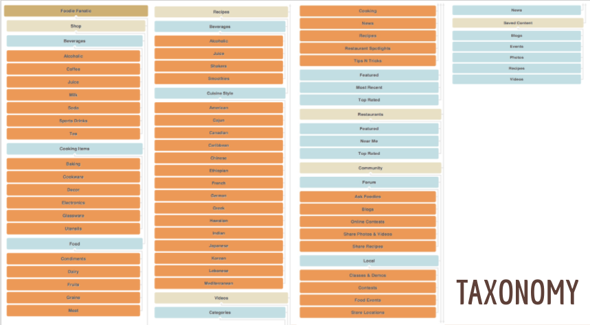

Foodie Fanatic
- Timeline: Jan. 2017 - Mar. 2017
- Role: User Advocate
- Tools: Balsamiq, Photoshop
- Skills: User Research, Persona Creation, Information Architecture, Wireframing, Card Sorting, Taxonomy
Context
In a course focused on User Experience and Information Architecture, myself and a team of 3 others were presented a case study of Foodie Fanatic - a new specialty cooking and baking store hoping to provide a strong digital and physical store presence across the nation. Foodie Fanatic's goal is to become the one stop shop for all foodies. Below is a list of what they hope to offer to customers:
- Products, with the appropriate content and data (e.g. photos, price, description, etc)
- Instructional articles with accompanying photos
- Instructional videos
- Multimedia produced by Foodie Fanatic for public consumption
- Multimedia submitted by customers in an effort to engage with Foodie Fanaticand its other users
- Cooking class and local store demos and other events
- Q and A forum boards
- Online contests
So pretty much to sum it up: anything and everything that has to do with food.
As a team, we were tasked to come up with an information architecture proposal for the Foodie Fanatic site so that users are easily able to identify where a specific type of content can be found, locate it, and interact with the site and other users in an intuitive way.
Current Issues
From Foodie Fanatic's initial user research, they have recieved the following feedback:
- “I always have a hard time browsing for things like blenders!”
- “You have lots of instructional videos and the quality of the ones I have watched are great, but there are so many and they are poorly organized that I usually ignore them.”
- “There are no "details" on this cooking class page - no price, no dates etc. Then I realized it was because it happened yesterday.”
- “Why don’t you have recipies using the food you sell?”
- “After about 10 minutes of searching I usually haven’t found anything. I browse through all of it, and it’s a bunch of crap!”
Thus, we have identified three main issues that we hope to address in our proposed solution:
- Users are having a hard time browsing content
- They are frustrated by the quality of the content and their level of detail in particular
- Content is not related to the products well
User Personas
To fully articulate and understand the needs of potential users of the Foodie Fanatic site, we developed three user personas and identified each of their individual information needs.
Olivia - The Stay At Home Mom
Information needs:
- Only be presented with content that is relevant to what she is looking for
- Easy access to new and featured recipes to limit wasted time on the site
- Past viewed content or content that she’s saved before
- Good instructional video recipes and guides that are informative and easy to follow
- Make browsing easier, especially for products she’s not familiar with
Charlie - The Social Millenial
Information needs:
- Better notification of events so he can plan around his busy schedule
- Event details that are clear so he’s not misinformed about events
- How to connect with other Foodie-topia users outside of events
- Easy, good quality recipes since he doesn’t have much free time to cook
- Tips and tricks specific to the items and foods he purchases
Eric - The Genuine Foodie
Information needs:
- Where and how to obtain recipe ingredients
- Clear recipe descriptions about length and difficulty
- How to share his own recipes with others
- Tips and tricks about seasonal ingredients to inspire new recipes
Content Strategy
Identifying our user needs allowed us to easily come up with a content strategy for our proposed site. We planned to:
- Optimize browsing, searching, and filtering for easier access to products and content
- Strive to create clear and highly-organized instructional videos and articles for foodies at home
- Provide a platform which serves to connect foodies as a community both physically and digitally
After iterating on feedback from peers and our professor, we came up with the following Sitemap and Taxonomy diagram to aid us in developing our first wireframes.
 